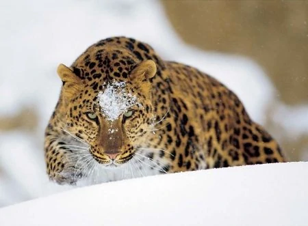

LEOPARDO DEL AMUR
El leopardo del Amur es la subespecie de leopardo más rara que existe. Está en peligro crítico de extinción; solo existen en libertad entre 25 y 34 ejemplares, en la reserva de Sijote-Alin, y su endogamia los coloca al borde de la extinción total.
Altura: 64 – 78 cm (Macho, Al hombro)
Clase: Mammalia
Esp
ecie: P. pardus
Masa Corporal: 32 – 48 kg (Macho), 25 – 42 kg (Hembra)
Longitud: 1.1 – 1.4 m (Macho), 73 – 110 cm (Hembra
 |